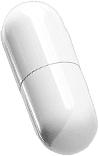

<!--DEV
@@include('blocks/adverse-reactions/adverse-reactions.html', {
  "gradient": "dark-light-gr"
})

Adverse reactions: the capsules picture (4 pictures, the parallax effect on pointer move) and the info-accordion block.
The section is the grid: below lg one column (the picture above the accordion), from lg the picture on the left and the accordion on the right.
Background is transparent: the gradient is a separate class on the section (@@gradient).
The capsules are decorative (alt=""), the order of the pictures is not important. The JS (adverse-reactions.js) is needed only for the parallax.
-->

<section class="container  adverse-reactions  @@gradient">
  <h2 class="visually-hidden">Що таке небажані реакції та як про них повідомити</h2>
  <div class="adverse-reactions__media  js-capsules" aria-hidden="true">
    <picture class="adverse-reactions__capsule  adverse-reactions__capsule--main">
      <source srcset="img/capsule-main.webp" type="image/webp">
      
    </picture>
    <picture class="adverse-reactions__capsule  adverse-reactions__capsule--left">
      <source srcset="img/capsule-1.webp" type="image/webp">
      
    </picture>
    <picture class="adverse-reactions__capsule  adverse-reactions__capsule--bottom">
      <source srcset="img/capsule-2.webp" type="image/webp">
      
    </picture>
    <picture class="adverse-reactions__capsule  adverse-reactions__capsule--top">
      <source srcset="img/capsule-3.webp" type="image/webp">
      
    </picture>
  </div>
  <div class="adverse-reactions__body">
    @@include('../../blocks/info-accordion/info-accordion.html')
  </div>
</section>
